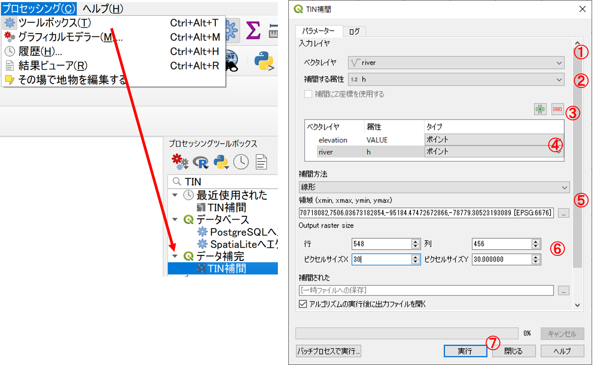
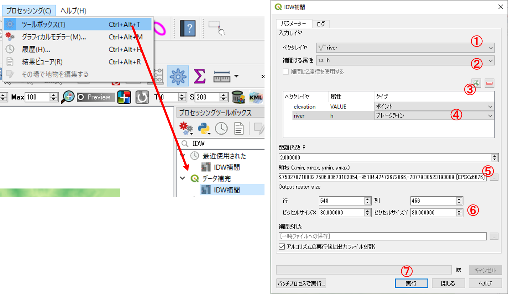
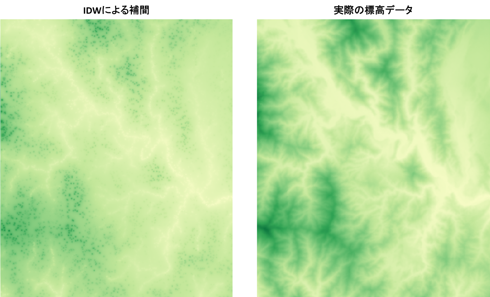
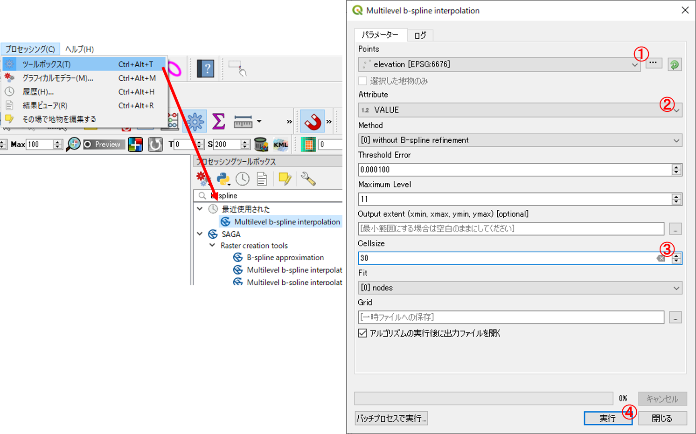
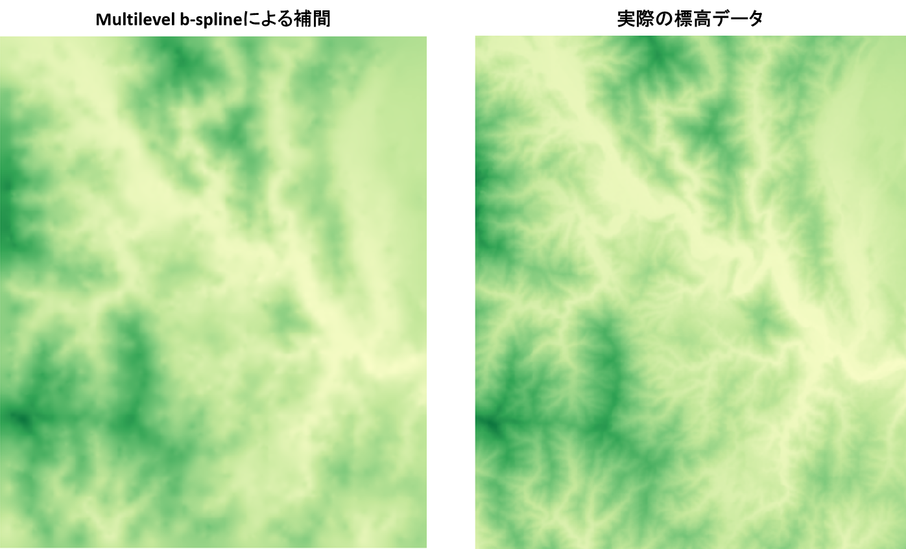
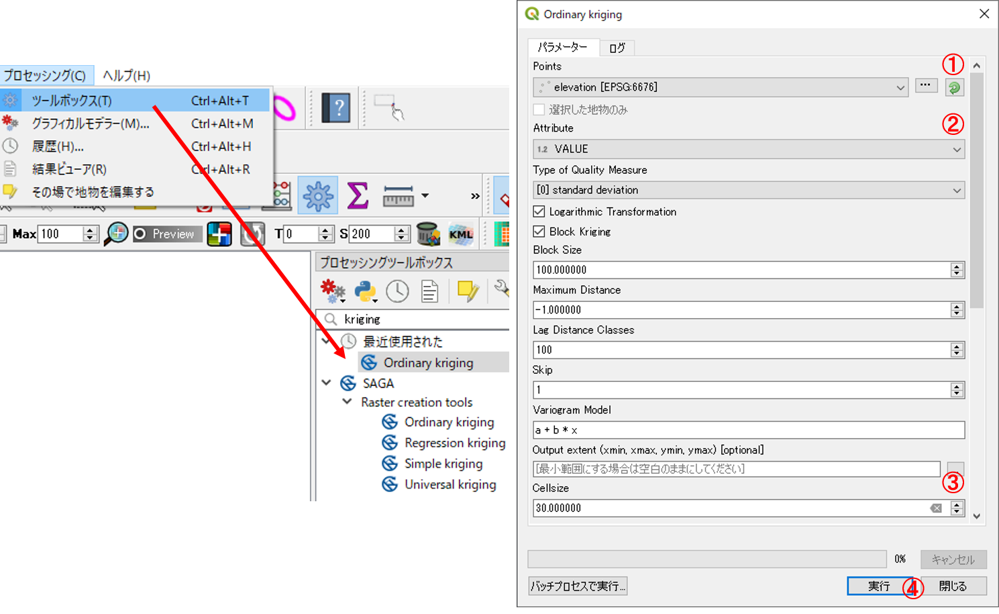

空間補間
本教材は、「空間補間」の実習用教材です。GISソフトウェアを用いた、空間補間の手法について解説しています。空間補間は、観測値などの既知のデータを用いて、周辺のデータを予測する際に用いる手法です。実際に処理をする場合は、値の分布状況や対象となるデータ特性を考慮した空間補間法の選定が重要になります。以下では、GISで不正三角網,逆距離加重法,スプライン,クリギングで空間補間する手法について、解説を行っています。
Menu
以下は余裕がある人のみ実習してください。
実習用データ
実習をはじめる前に、interpolationをダウンロードしてください。
不整三角網
以下では、ランダム抽出した富士山周辺の標高点を利用し、不整三角網（Triangulated lrregular Network）によって未観測の標高地点の値を補間する手法について解説します。ソフトウェアには、QGISを用います。
まず、elevation.shp, river.shp, fuji.tifをQGISに読み込む。プロセッシング＞ツールボックス＞データ補間＞TIN補間を選択し、以下の手順で実行する。

- ベクタレイヤから標高点を指定する。
- 補間する属性をVALUEとする。
- 追加をクリックする。
- タイプをポイントとする。同様にriverとその補完する属性として
hを追加し、タイプをブレークラインとする。 - 領域から、レイヤの領域とする（標高点のレイヤを指定する）。
- セルサイズのXYを30とする。
- 実行をクリックする。
出力された結果をプロパティ＞シンボロジー＞単バンド疑似カラーで、最小を0、最大を1200とし、5段階の段彩表現とし、実際の標高データとの違いを確認する。余裕があれば、ブレークラインなしでの出力も行い結果の違いを確認する。
逆距離加重法
以下では、逆距離加重法(IDW:Inverse Distance Weighted)で補間する手法について解説しています。
プロセッシング＞ツールボックス＞データ補間＞IDW補間を選択し、以下の手順で実行する。

- ベクタレイヤから標高点を指定する。
- 補間する属性をVALUEとする。
- 追加をクリックする。
- タイプをポイントとする。同様にriverとその補完する属性として
hを追加し、タイプをブレークラインとする。 - 領域から、レイヤの領域とする（標高点のレイヤを指定する）。
- セルサイズのXYを30とする。
- 実行をクリックする。
出力された結果をプロパティ＞シンボロジー＞単バンド疑似カラーで、最小を0、最大を1200とし、5段階の段彩表現とし、実際の標高データとの違いを確認する。余裕があれば、ブレークラインなしでの出力も行い結果の違いを確認する。

以下は余裕がある人のみ実習してください。
スプライン補間
以下では、スプライン補間として、QGISで利用できるSAGA GISのMultilevel b-splineの手法について解説しています。
プロセッシング＞ツールボックスからMultilevel b-spline interpolationを選択し、以下の手順で実行する。

- Pointsに標高点を指定する。
- Attribute をVALUEとする。
- Cell sizeを30とする。
- 実行をクリックする。
出力された結果をプロパティ＞シンボロジー＞単バンド疑似カラーで、最小を0、最大を1200とし、5段階の段彩表現とし、実際の標高データとの違いを確認する。

クリギング
以下では、クリギングとして、QGISで利用できるSAGA GISのOrdinary Kriging(通常クリギング)の手法について解説しています。
プロセッシング＞ツールボックスからOrdinary krigingを選択し、以下の手順で実行する。

- Pointsに標高点を指定する。
- Attribute をVALUEとする。
- Cell sizeを30とする。
- 最下段の’Quality Measure’のチェックをはずし、実行をクリックする。
出力された結果をプロパティ＞シンボロジー＞単バンド疑似カラーで、最小を0、最大を1200とし、5段階の段彩表現とし、実際の標高データとの違いを確認する。
この教材の課題ページ_空間補間へ進む
ライセンスに関する注意事項
本教材で利用しているキャプチャ画像の出典やクレジットについては、その他のライセンスについてよりご確認ください。